טיול קראוון באוסטריה (איזור זלצבורג)
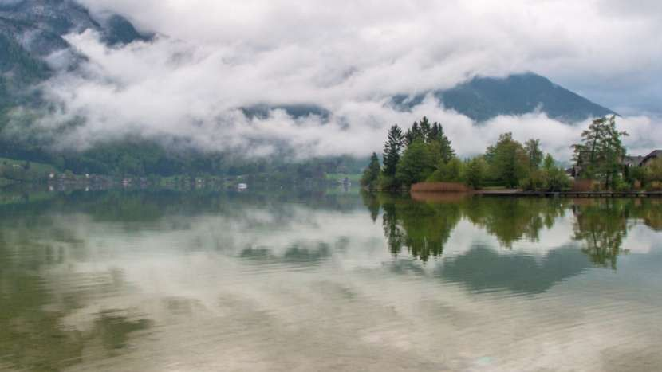
הבלוג הזה בא לספר על הטיול שעשינו בקראוון באיזור זלצבורג שבאוסטריה עם תאומים בני 4 חודשים. אני בטוחה שלא נחדש הרבה על מסלולים ואתרים, אבל המטרה העיקרית היא לכתוב על טיול בקראוון וטיול עם תינוקות- מידע שהיה מאוד חסר לי בתכנון הטיול.
נסענו באמצע אפריל, עונה שלדברי רבים "אינה מתאימה לטייל עם קטנים כי מדובר במדינה אלפינית", אני שמחה להפריך טיעון זה- זכינו למזג אוויר מדהים כל הטיול, ובלי קשר אנחנו מאמינים שניתן לטייל בכל מזג אוויר (גם עם תינוקות) פשוט צריך להתארגן על לבוש וציוד מתאים. העדפנו לטייל בעונה זו בגלל המחירים הזולים משמעותית ומיעוט התיירים בכל המקומות, מצד שני יש אתרים שעדיין לא פתוחים בעונה הזו, כך שזה שיקול אישי מה עדיף- שיא עונת התיירות או לוותר על כמה אתרים.
טיול עם תינוקות אפשרי בהחלט ואפילו מאוד כיפי! הכי חשוב זה להתאים ציפיות ולזרום עם הקטנים, להתכונן לקצב מאוד איטי ולסיים את היום בשעה יחסית מוקדמת. בזכות הקראוון יכולנו להיות גמישים בנסיעות, לעצור כשצריך, מבלי לחשוש ששכחנו משהו חשוב ב"בית", וזכינו להיות במקומות מדהימים בחיק הטבע.
בסוף הבלוג ריכזתי כמה טיפים על הקמפינגים ועל טיול עם תינוקות לשימושכם.
אז אחרי ההקדמה הזו, הנה סיכום הטיול שלנו:
בשעה טובה נולדו התאומים, וככה בין החלפת חיתולים, האכלות ומחסור אדיר בשעות שינה, החלטתי לנצל את "חופשת" הלידה ל"חופשה" אמיתית. טוב, עם תאומים בני 4 חודשים לא באמת נזכה לחופשה, אבל מבחינתי עוד זוג ידיים צמוד (שיפור משמעותי ביחס ילד הורה) ונוף יפה מהחלון כבר שווה את הטרחה. למזלי בעלי זרם עם רעיון החופשה והחלטנו ללכת על זה.
מסתבר שמאוד קשה לבחור יעד עבור טיסה ראשונה עם הקטנטנים, מצד אחד רוצים טיסה ישירה, שלא תהיה ארוכה, מצד שני אנחנו חובבי טבע ולכן חופשה עירונית ירדה מהפרק, אז חשבנו על סלובניה- מדינה קטנה עם טבע יפיפה וטיילתי בה כבר, כך שלא אתאכזב אם לא נראה את הכל... בזמן חיפוש טיסה לסלובניה, ראינו שהטיסה הישירה והקצרה היחידה שמתאימה זה טיסה למינכן ומשם דרך אוסטריה נגיע לסלובניה.
עכשיו נשאר לחשוב איך אנחנו הולכים להתנייד. במצב רגיל יציאה מהבית עם התאומים דורשת הערכות של מבצע צבאי, כולל קפ"קים ומסדרי ציוד (בקבוקים, חיתולים, בגדים, חלב, משאבה, תמ"ל ומה לא), רק מלחשוב על מסדרי בוקר כאלה, והתארגנות יומיומית שתיקח לנו כמה שעות טובות הבנתי שככה לא נצא מהבית, אז למה בעצם שלא נטייל עם הבית? וכך החלטנו על קראוון (היינו באיסלנד עם קראוון והיה מדהים, כך שניסיון בטיול קראוון כבר יש לנו).
אחרי שסגרנו יעד ואמצעי תחבורה/לינה, נשאר לסגור תאריכים. בהתחלה רצינו פסח (סוף מרץ), אבל לאחר מחשבה שנייה החלטנו לחכות קצת שהתאומים יגדלו ומזג האוויר יתחמם מעט, לכן החלטנו על אפריל (17-26 באפריל) מה גם שהמחירים עדיין של low season (הבדל מאוד משמעותי במחיר הקראוון), וזאת למרות ההפחדות מצד המשפחה (שחשבו שאנחנו משוגעים) וגם בפורומים שטענו בתוקף שממש קר באוסטריה בעונה זו (ספויילר- היה כלכך חם שרציתי לקנות שמלה של היידי בת ההרים כי לא היה לי בגדי קיץ).
את הרכב שכרנו ישירות מהחברה- McRent וללא מתווכים ישראליים (חסך כ-300 יורו) כך שעלות הקראוון היתה 1200 יורו ל-10 ימים (כולל כלי מטבח, מצעים ו-2 כסאות תינוקות). קצת לגבי כסאות בטיחות- בגרמניה ואוסטריה חובה להסיע תינוקות בכסא בטיחות, לכן כשמזמינים כסא חשוב לציין שזה baby seat group 0 אחרת תקבלו בוסטר/כסא לילד בן שנה (מה שנקרא אצלם child seat).
אז אחרי שסגרנו את כל הלוגיסטיקה התיישבתי לתכנן את הטיול, וכך יצא שככול שקראתי על איזור זלצבורג באוסטריה (שבמקור היינו אמורים רק לעבור דרכו) התגבשה ההבנה שלסלובניה אנחנו הפעם לא נגיע... אוסטריה התאימה לנו בול- נוף אלפיני, והמון אגמים וטבע ירוק, בול מה שרצינו.
17.4:
נרגשים וקצת חוששים אנחנו נוסעים לנתב"ג לטיסת בוקר (6:00) למינכן עם אל-על. הטיסה עברה מצוין, הבת ישנה כל הטיסה והבן פלירטט עם הדיילות והנוסעים :) (טיפים לטסים עם קטנטנים בסוף) ובשעה 9:00 (זמן מקומי) נחתנו במינכן. תחנת השכרת הקראוון נמצאת בעיירה sulzmoos כ-50 ק"מ מהשדה, בגלל שהיינו עם 2 מזוודות גדולות , תיק החתלה ענקי ועגלת תאומים בספק רב אם היינו מוצאים מונית שהיינו נכנסים בה (ועוד 2 כסאות בטיחות שחייב שיהיו) לכן פשוט הזמנתי מונית מהארץ דרך האתר- munich airport taxi. הזמנתי רכב גדול (11 נוסעים) עם כסאות בטיחות (סל קלים)- לא זול (190 יורו הלוך וחזור) אבל שווה את השקט הנפשי. הנהג חיכה לנו עם שלט בשדה, העמסנו את כל הציוד ונסענו ברכב מרווח לתחנת הקראוונים.
תחנת ההשכרה היא פשוט מוקד עליה לרגל של קראוונים, ים- אבל ים קראוונים מכל הסוגים והגדלים נמצאים שם. לצערנו הקדמנו, והקראוון שלנו לא מוכן כך שהיו לנו שעתיים להרוג, אותם בילינו בסניף מקדונלדס (המקום היחיד שאפשר לשבת באיזור). בשעה 15:00 סוף סוף מקבלים את הקראוון ואנחנו עוד צריכים להצטייד במזון. למזלנו החבר'ה בתחנת ההשכרה מביאים לנו חוברת עם מידע על סופרים קרובים ואתרי קמפינג בסביבה (באירופה אסור לחנות חניה יבשה- שלא בקמפינג).
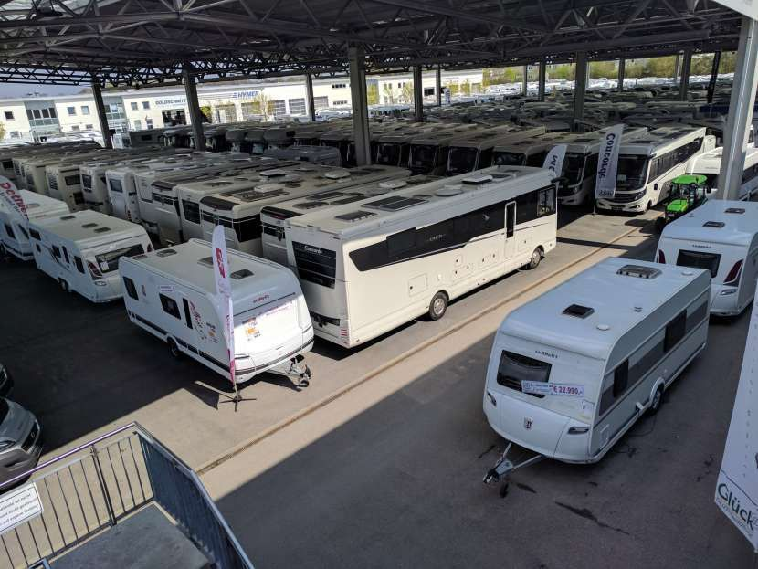
לגבי כסאות בטיחות- קיבלנו סל קלים שעוגנו למושבים הצמודים לשולחן האוכל, אבל בגללם לא ניתן היה להרים את השולחן לגובה מתאים לאכילה (הוא נשאר נמוך) וכך קיבלנו שולחן החתלה... ברגע האחרון בעלי מחליט לשכור גם שולחן פיקניק וכסאות (השולחן הזה הציל אותנו בטיול כי את כל הארוחות אכלנו בחוץ).
אחרי הצטיידות בסופר והאכלה של הקטנים השעה כבר חמש בערב, אנחנו כבר גמורים מעייפות. התכנון הוא להגיע לאגם המלכים הנמצא כ-200 ק"מ ממינכן, מראש ידעתי שלא ניסע לשם ביום הראשון אז תכננתי לעצור ליד אגם Cheimsee שבדרך, אבל גם לשם יש 100 ק"מ נסיעה שאנחנו פשוט לא מסוגלים לבצע מרוב עייפות. כך שהחלטנו לקבל את המלצת החבר'ה של ההשכרה וללון בקמפינג ליד מינכן- Campingplatz München Thalkirchen (פרוט על מקומות הלינה בסוף) אנחנו מכוונים וייז (רכשנו חבילה בארץ, כי בגרמניה ואוסטריה יש צורך בסימים נפרדים אז כבר השתלם לנו חבילת גלישה בלבד מהארץ) ומתחילים לנסוע. אין הרבה מה לספר על הדרך למעט שנתקענו בפקקים של טבעת מינכן ולקמפינג הגענו בשבע בערב (מזל שמחשיך מאוחר), אנחנו משלמים 30 יורו (כולל חיבור לחשמל) וחונים ללילה, מקלחות ואוכל לילדים (אפשר לקלח תינוקות בקראוון- בעלי פשוט נכנס איתם למקלחת ותיקתקנו אותם בסרט נע), אני מסדרת זריז את הבגדים והציוד בזמן שבעלי מבדר את הקטנים, למזלנו התאומים מותשים כך שהם נרדמים מיד ואנחנו זוכים לקצת מנוחה בחיק הטבע.
18.4:
התעוררנו מוקדם בבוקר (ככה זה עם תינוקות) לבוקר מקסים ושטוף שמש, בזמן שהקטנים ישנו שנת בוקר ובעלי הכין ארוחת בוקר, אני יצאתי לשוטט ולצלם. חנינו ממש מול הנהר וכמו לפי בקשה הגיח ברבור יפהפה לדגמן למצלמה שלי :).
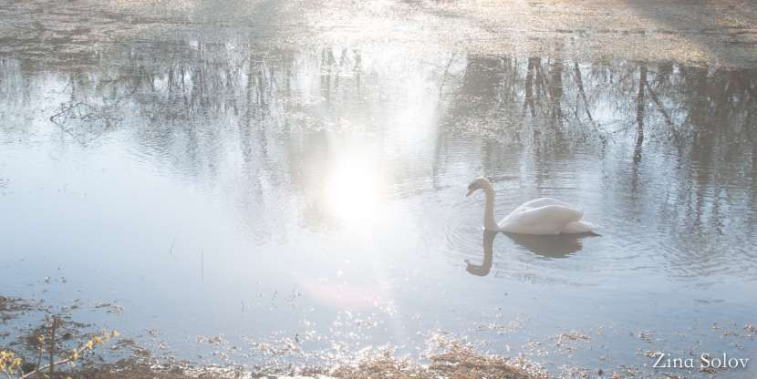
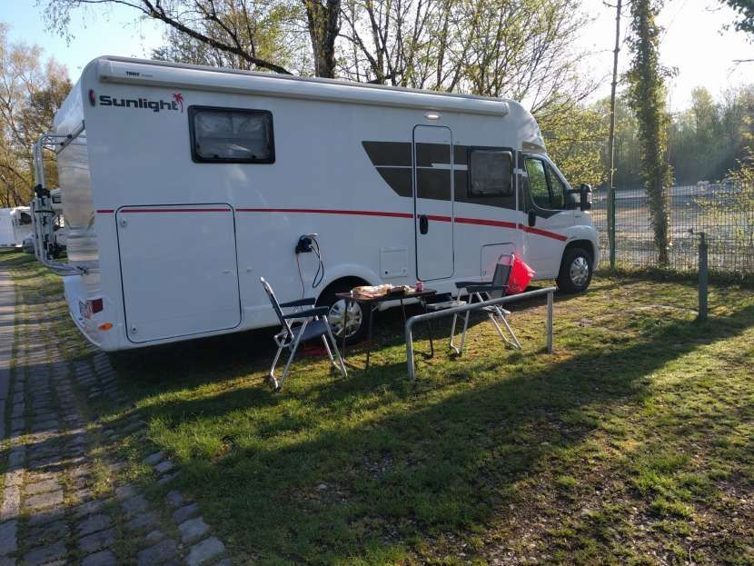
בשעה עשר סוף סוף היינו מוכנים לצאת לדרך. בגדול מדובר בנסיעה של 200 ק"מ- גג שעתיים שלוש, אבל עם תאומים הנסיעה הזו התפרסה על פני יום שלם! הגענו לקמפינג הבא רק בארבע אחר הצהריים, אבל הנסיעה היתה מהממת.
התחלנו על הכביש המהיר לכיוון זלצבורג, אולם בשלב מסויים הוויז הוריד אותנו לכביש משני לכיוון העיירה Lofer באוסטריה, ההרים הלכו והתקרבו, דשא ירוק ופסגות מושלגות. עצירה ראשונה עשינו לצידי הדרך המהירה (במפרץ עצירה) כדי להאכיל את הקטנים שהתעוררו ודרשו אוכל. בהמשך הגענו לעיירה מקסימה בדרך (לא זוכרת את שמה לצערי) שם החלטנו לחלץ מעט רגליים ולצאת לסיבוב קצר וכן לעבור בסופר ולקנות נשנושים וכמובן להאכיל את הקטנים שוב. כעבור שעתיים המשכנו בדרכנו, הכביש עובר בין ההרים, נופים משגעים, בשלב מסויים אנחנו מתחילים לעלות (לחץ באוזניים) ואז נגלה לנו נוף מדהים:
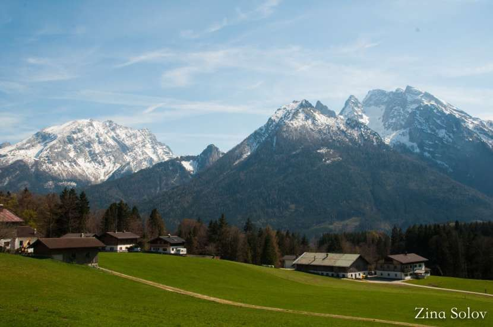
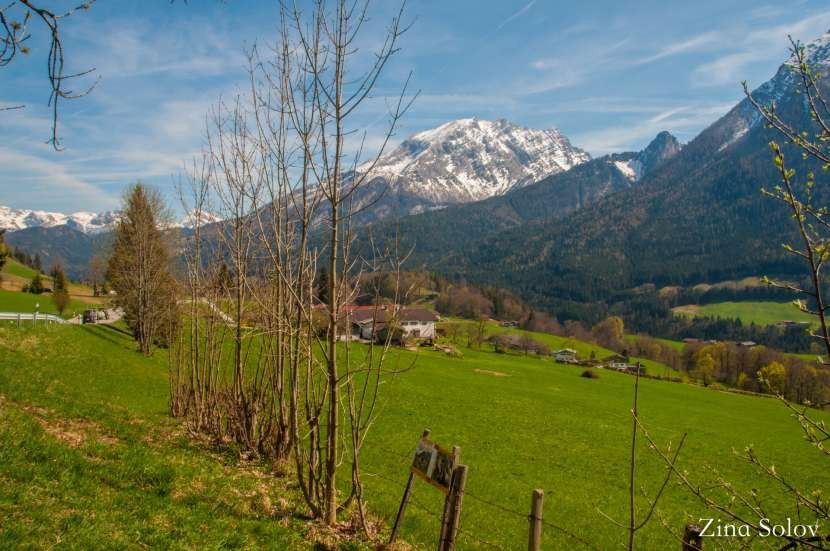
שיכורים מהנוף אנחנו ממשיכים עד הקמפינג- Campsite Grafenlehen, זה הקמפינג היחיד שממש צמוד לאגם המלכים, ונמצא ממש על הנהר. אנחנו מחליטים לנצל את השעה שיש לנו עד ההרדמות של הילדים לטיול לאורך הנהר. מכניסים את הילדים למנשא ויוצאים לטייל.
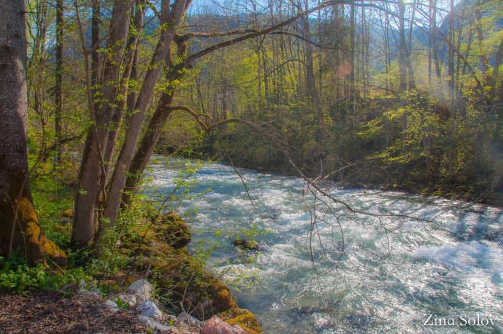
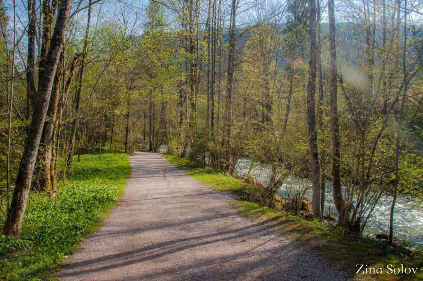
בקיץ הקמפינג בטח שוקק חיים וצריך להזמין מקום מראש (כתוב גם באתר שלהם) ויש גם פאב, אולם העונה טרם נפתחה למרות שיש לא מעט קראוונים אבל עדיין יש מקום בשפע (חבל מאוד שהפאב סגור). אנחנו מתפנקים בארוחת ערב שבישלנו ונהנים מכוס יין בחוץ על רקע ההרים.
19.4:
עוד יום מקסים מקדם את פנינו. אחרי שבילינו את מרבית יום האתמול בנהיגה, החלטנו שהיום אנחנו נשארים בקמפינג ולוקחים את הטיול באיזי. אנחנו שמים את הילדים לישון בעגלה בחוץ בעוד שאנחנו נהנים מארוחת בוקר בנוף המשגע.
אחרי שאכלנו והילדים קמו, אנחנו שמים אותם במנשא ומתחילים ללכת לכיוון האגם. בהתחלה חשבנו שמדובר בהליכה ארוכה, אולם לפי השלטים אנחנו במרחק עשר דקות משם. יש שביל מסודר מאוד ומתאים אפילו לעגלות. השביל עובר ביער לאורך הנהר, כשאנחנו הולכים ליד המים ממש מרגישים את הקור העולה מהם. אחרי כמה דקות מגיעים לסכר, שם אנחנו נהנים לראות את הברווזים שוחים בנחת ומשתזפים בשמש. מהסכר תוך שתי דקות ואנחנו על שפת האגם. כיאה למתחם תיירותי, במקום שפע מסעדות וחנויות מזכרות, מי שרוצה יכול לעשות גם שייט באגם.
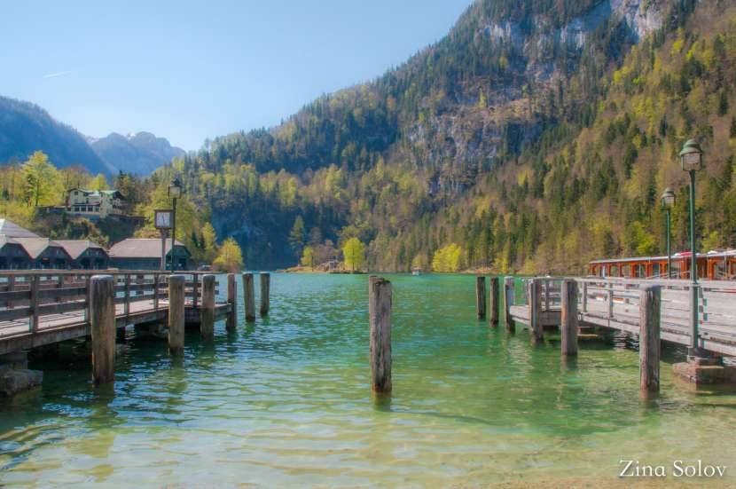
למזלנו עדיין לא החלה העונה ככה שאין הרבה אנשים כלל ועם זאת הכל כבר פתוח. שוטטנו קצת בטיילת, לא כלכך קרץ לנו לעשות שיט (לא כזה נוח עם הילדים במנשא) לכן החלטנו ללכת לתצפית על האגם (לפי השלטים רבע שעה הליכה).
השביל לוקח אותנו לתוך יער מקסים, השמש מבצבצת בין העצים וכך גם האגם, הילדים נרדמים במנשא, ואנחנו נהנים מאוויר צלול והליכה קלילה ונעימה (ולא קשה כלל). אחרי רבע שעה הגענו לתצפית מהממת (ממנה רואים את כנסית סט. ברטולומאו, סמל המקום, שמגיעים אליה בשייט). ניתן להמשיך למסלולים נוספים באיזור (יש שפע כאלה! בכלל כל האיזור הוא פארק לאומי וגן עדן לטיולים רגליים). אנחנו נחנו קצת על הספסלים וספגנו את השקט והשלווה במקום וצעדנו חזרה לקנח בגלידה.
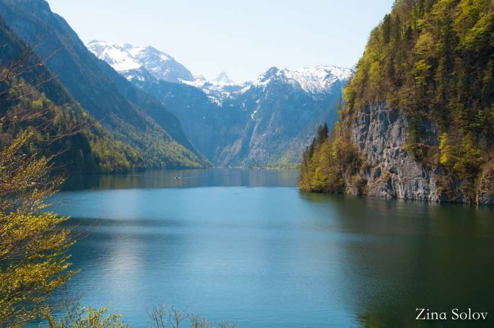
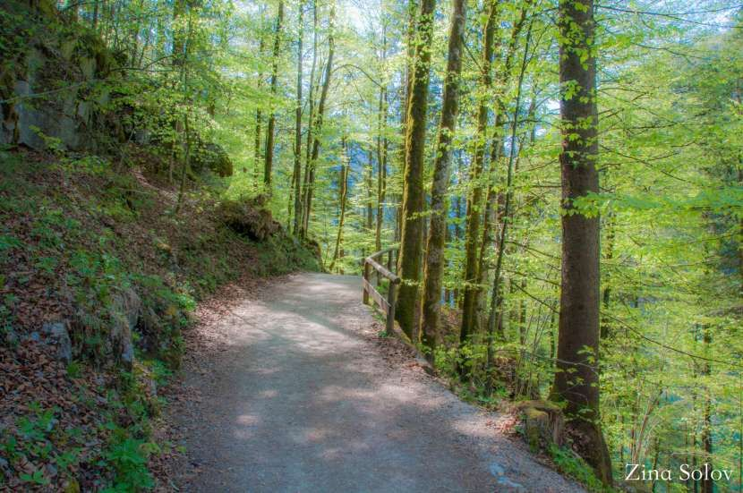
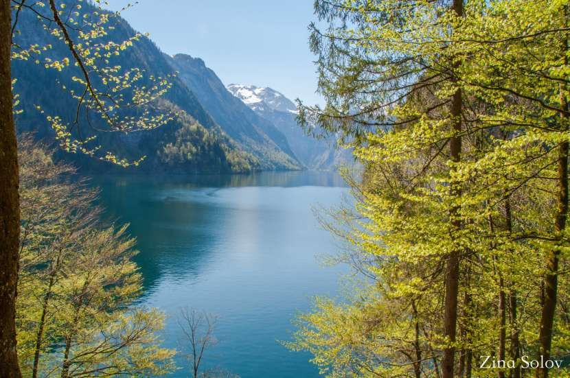
את שעות הצהריים הערבנו בקמפינג, ישבנו בשמש, הילדים ישנו. בערב החלטנו להתפנק במסעדה (אין לנו כוח לבשל) אז אחרי ניסיון לא מוצלח למצוא משהו בעיירה, שמנו פעמינו חזרה לאגם. שם מהצד הנגדי למתחם הטיילת מצאנו מסעדה נהדרת על גדת האגם, אוכל טעים ביותר ונוף משגע! כמובן שניצלנו את ההזדמנות לעוד קצת תמונות משפחתיות על רקע האגם. עייפים ומרוצים חזרנו למקלחות והרדמות.
קצת תמונות של האגם בערב:
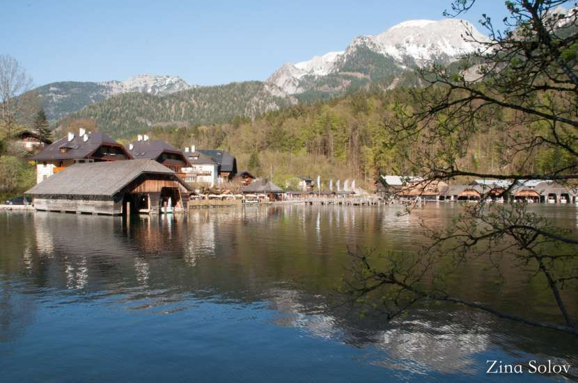
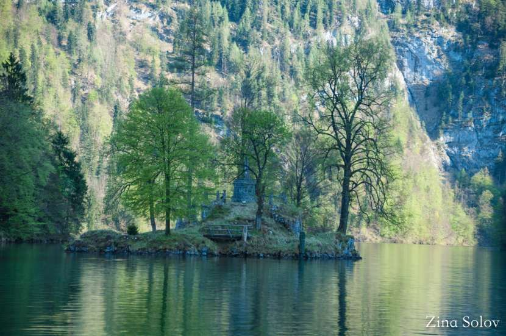
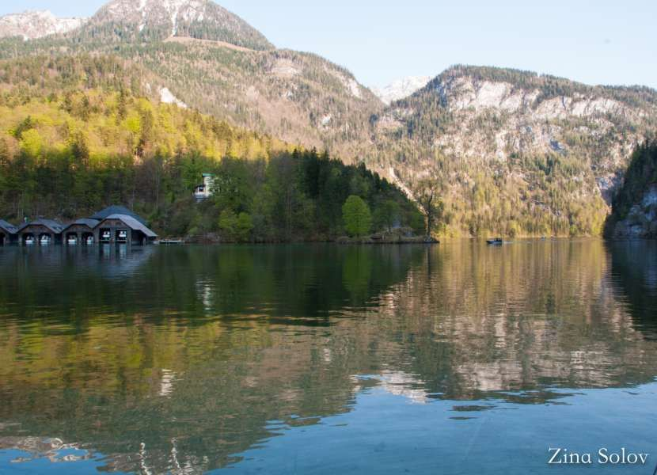
20.4:
אנחנו קמים לעוד בוקר שמשי ויפה, היום אנחנו חוצים את הגבול לאוסטריה, במקור תכננתי לנסוע היום לעיירה לופר ולערוץ סייסנברג ואז לישון באגם צל ומשם לנוע לכיוון הלשטאט, אולם לאור הניסיון הקודם בנסיעה ארוכה (200 ק"מ שלקח לנו 6 שעות!), בלב כבד החלטנו לוותר על האיזור הזה ולהתקדם לכיוון הלשטאט והאגמים. הגענו למסקנה שלנסוע יותר מ-80 ק"מ ביום פשוט שורף לנו יום שלם ברכב כך שהעדפנו להספיק פחות אתרים אבל למצות כל אתר שנהיה עד כמה שניתן.
לפני שנכנסים לאוסטריה צריך לקנות מדבקה לרכב, שנמכרת בכל תחנת דלק. המדבקה היא עבור תשלום על כבישי אגרה, ומינימום זמן זה 10 ימים.
התכנון היום הוא לנסוע למפלי גולינג משם לאגם גוסאו ולישון בהלשטאט, כרגיל תכנון לחוד ומציאות לחוד :). התחנה הראשונה שלנו היא מפלי גולינג שנמצאים בכפר גולינג, כפר אוסטרי טיפוסי, דשא ירוק, ברקע האלפים המושלגים, הכל ירוק ופורח וממש אוירה פסטורלית. אנחנו מחנים את הקראוון ליד הכנסייה על רקע השדות, שמים את הצוציקים במנשא ויוצאים לדרך.
בעיירה יש מספר בתי מלון וקמפינג, ואפילו כמה מסעדות שבעונה זו מלאות בתיירים גרמנים (משום מה הם בטוחים שגם אנחנו גרמנים, אולי כי גם הצוציקים בלונדיניים קטנים :)). מהחניה יש הליכה של כ7 דקות עד הכניסה למפל, בעונה אתם תדרשו לשלם עבור כניסה, אולם עכשיו הכניסה חינם. אנחנו נכנסים לתוך יער מדהים כשלמטה נהר הזורם לו בין הסלעים השונים, השמש מציצה מבין העצים ורק אנחנו והציפורים במקום פשוט תענוג.
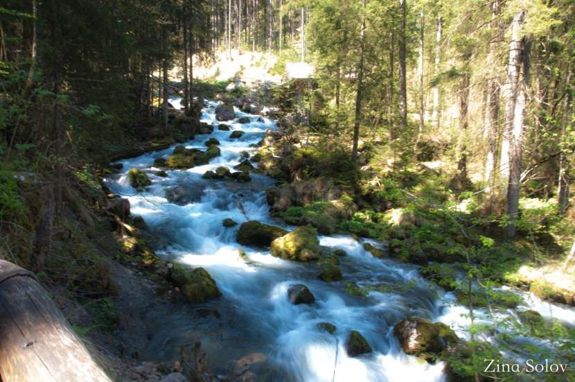
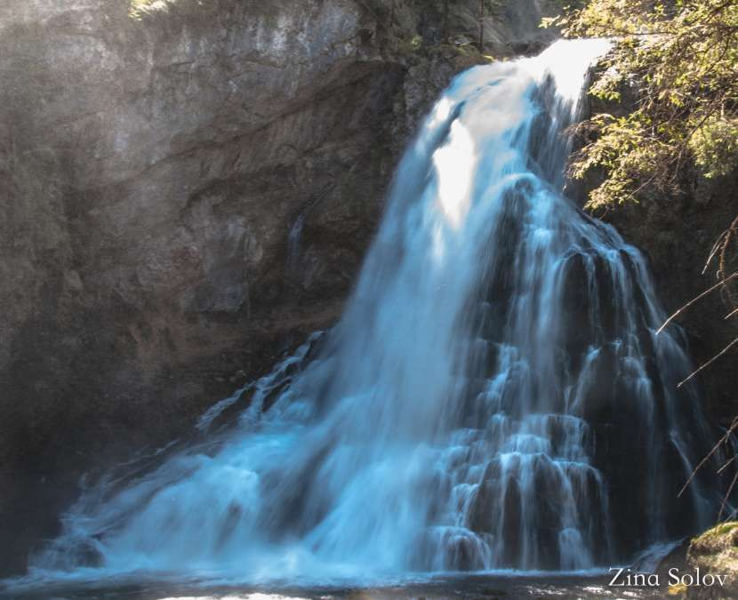
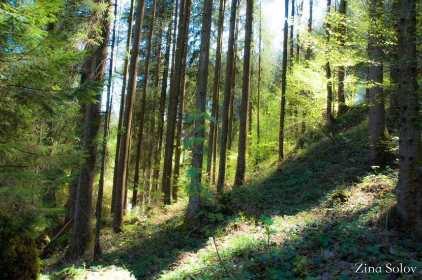
ההליכה אל המפל קלילה ותוך חמש דקות אנחנו זוכים לראות את המפל. להגיד שהמפל מרשים זו הגזמה, מפל חביב, מסלול חביב ולא יותר. מי שרוצה יכול להמשיך כמובן למעלה לתצפית, אבל אנחנו די מיצינו אז חוזרים לרכב.
המקרר ריק אז אנחנו צריכים למצוא סופר להצטיידות, בינתיים מכוונים את הוייז לאגם גוסאו ומתחילים לנסוע. הנופים משגעים! הכל ירוק כשברקע האלפים המושלגים. השעה כבר שלוש בצהריים ואנחנו מחליטים לחפש קמפינג בסביבה, מתוך מחשבה שעד שנגיע לגוסאו, להלשטאט כבר לא נספיק להגיע לפני המקלחות וסתם נבזבז יום יפה בדרכים מבלי ליהנות באתרים. בעזרת גוגל מפות אנחנו מאתרים קמפינג שנמצא ממש בדרך ונוסעים לשם.
הקמפינג הוא- Vitalcamping Oberwotzlhof, מדובר בקמפינג פרטי במקום משגע! על כר דשא ירוק כשמסביב האלפים, אנחנו סוגרים מקום וקופצים לסופר בעיירה הסמוכה להצטיידות. כך מצאנו את עצמנו בשעה 15:00 כבר בקמפינג מהמם, אז למה שלא ננצל את הזמן ונאוורר את הצוציקים? שמים אותם בעגלה ויוצאים לסיבוב.
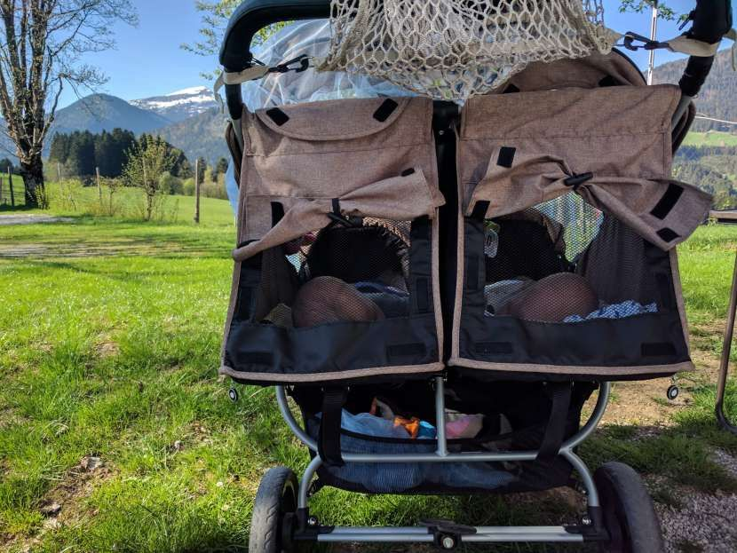
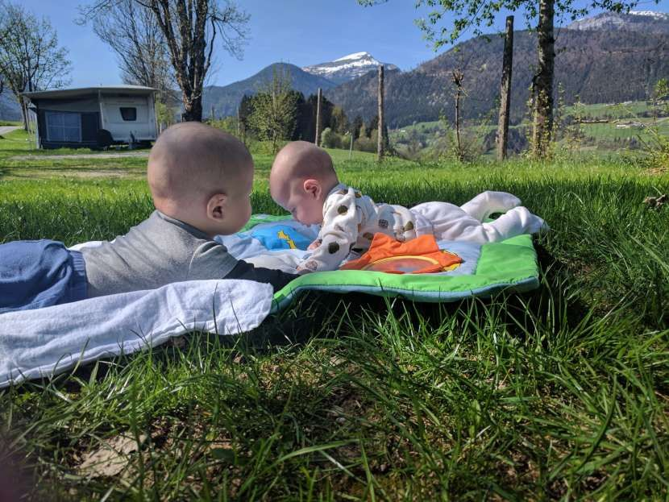
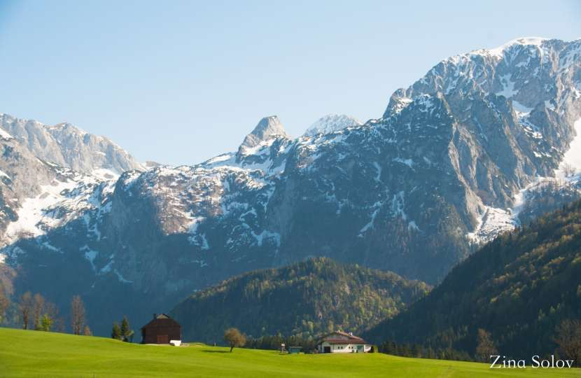
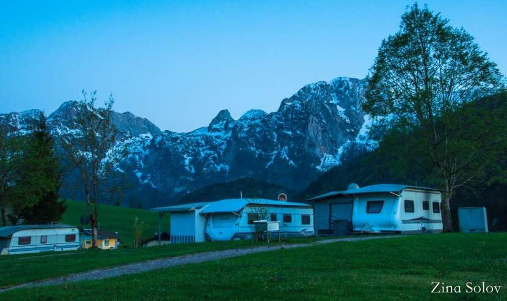
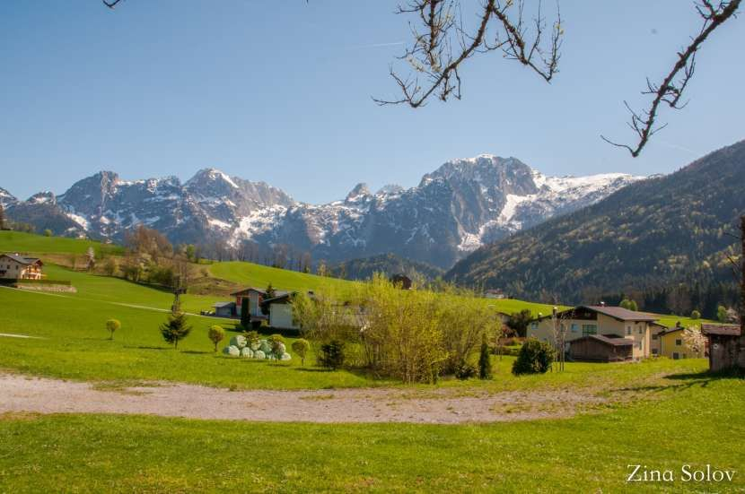
כאן אנחנו גם זוכים לראות שקיעה מדהימה! אומרים שתמונה שווה אלף מילים, אז הנה:
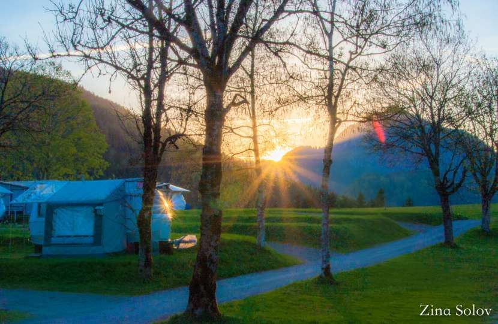
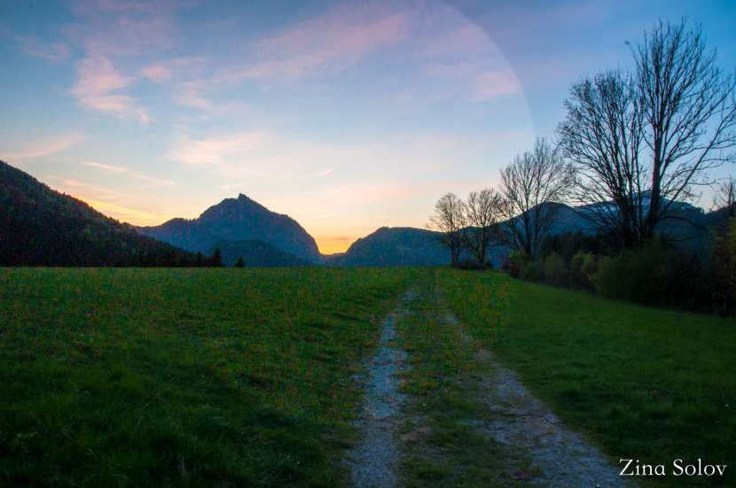
בלילה אין זיהום אור כלל, אז אני ובעלי נהנים מתצפית כוכבים מדהימה!
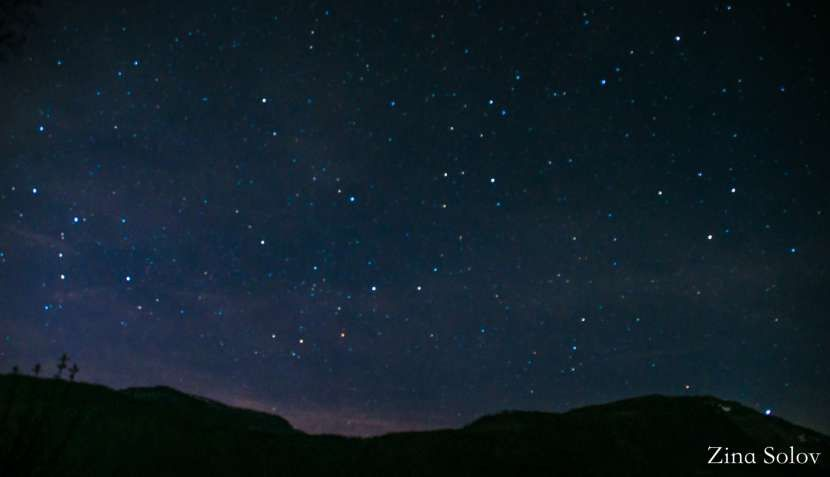
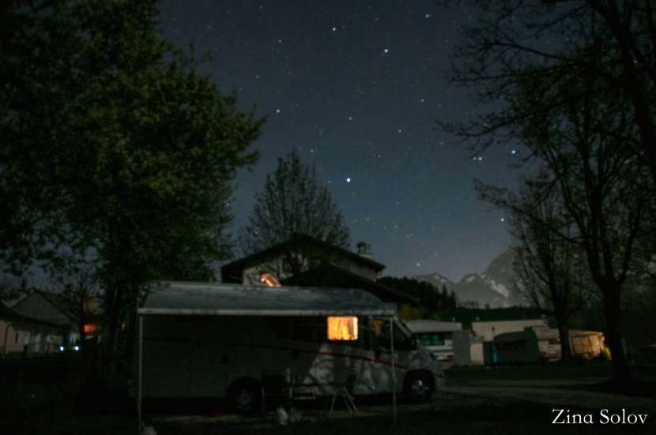
21.4:
לאחר התארגנות בוקר (ושנת בוקר בחוץ של הצוציקים) אנחנו ממשיכים בדרכנו לכיוון אגם גוסאו. הנסיעה כרגיל מהממת ועוברת בין הרים מושלגים, כפרים ציוריים שדות ירוקים ונהרות. אנחנו פונים לכיוון העיירה גוסאו המשמשת כעיירת סקי בחורף. בדרכנו לאגם אנחנו עוברים ליד אגם קטן יותר אך מקסים עם מים שקופים בהם משתקפים ההרים.
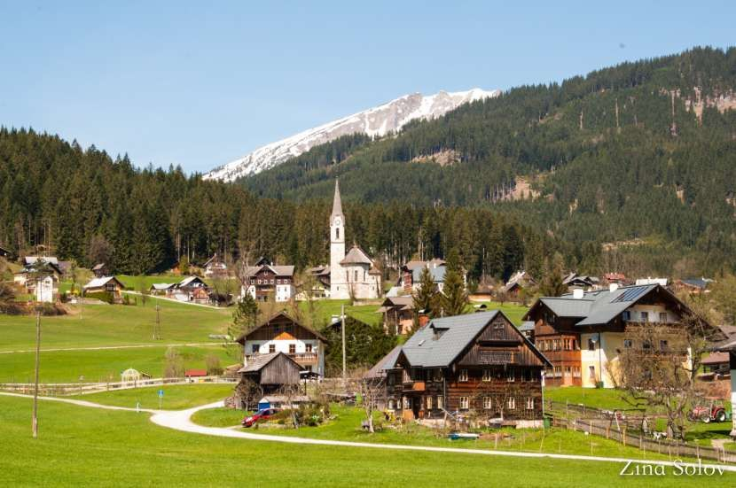
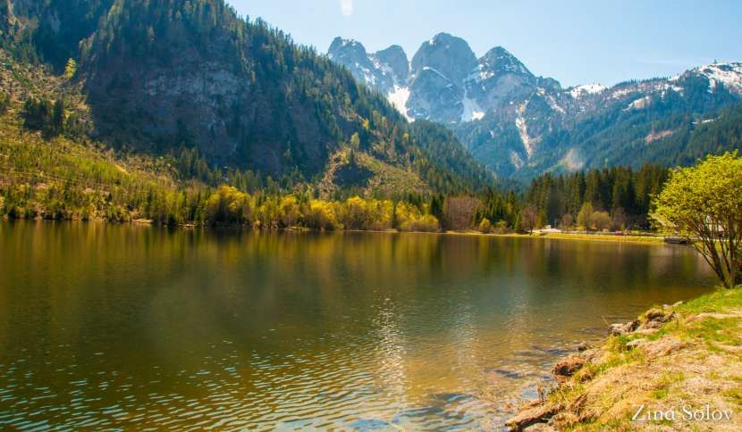
כמה דקות אחרי שחולפים על פני שפע החניות לאתרי הסקי (שסגורים כעת) מגיעים לחניה של האגם. אנחנו מופתעים לראות שעדיין יש שלג באיזור הזה, שלא נמס מהחום (אנחנו כבר נמסים). אנחנו מצטיידים בבקבוקים, שמים את הצוציקים בעגלה ויוצאים לטייל באגם.
האמת, חשבתי שהאגם יותר מרשים, סך הכל יש לו פותנציאל אדיר- הנוף סביב פשוט עוצר נשימה, אולם האגם די יבש ונראה יותר כמו שלולית, זה לא הפריע לנו להתלהב ולצלם את הילדים על רקע האלפים המושלגים. טיילנו קצת לאורך גדות האגם ונהנינו מהשלג שעדיין מונח על הקרקע במקומות מסוימים.
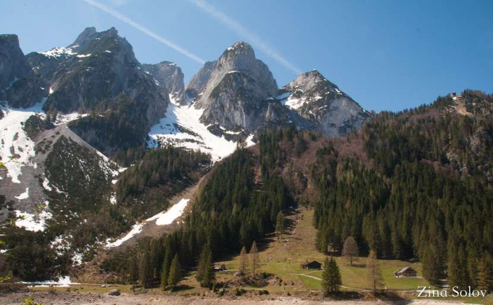
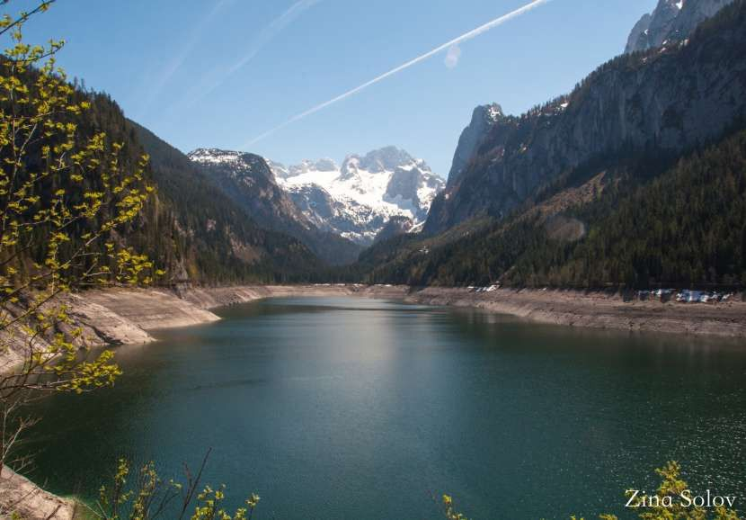
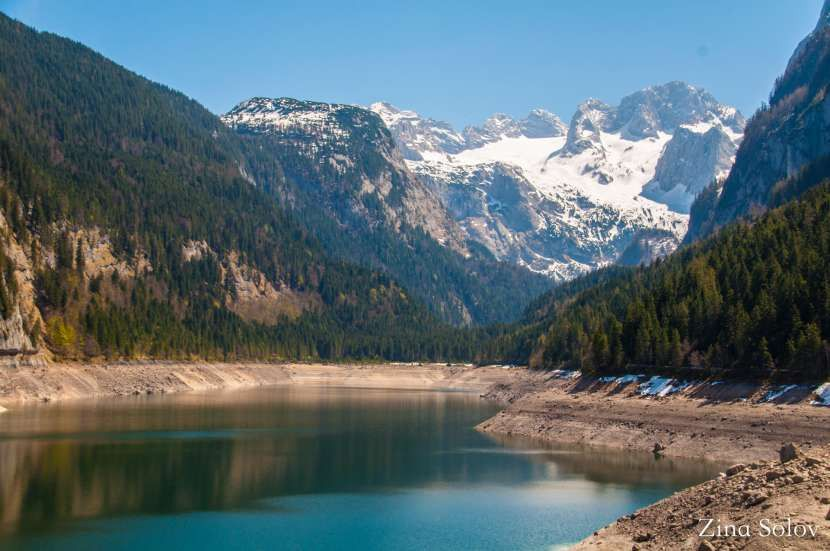
להפתעתנו ראינו שיש קבוצות שעושים הליכה עד לחלק מהמדרונות המושלגים כדי לגלוש מטה (למרות שלא נשאר שם כבר הרבה שלג...). במקום יש גם שפע מסלולי הליכה המובילים לפסגת ההרים ושוב אני קצת מתאכזבת שהמסלולים יידחו לעוד כמה שנים טובות (אני לא חייה באשליה שיש לנו מספיק כושר לטפס עם הצוציקים במנשא לפסגה). הצוציקים רעבים, האוויר הצח פתח להם את התיאבון כך שהם פשוט מחסלים בקבוקים, אז מצאנו לנו ספסל נחמד בצל, ונהנינו מזמן שקט בחיק הטבע.
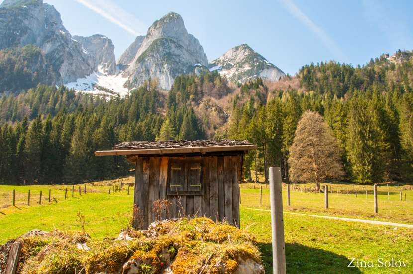
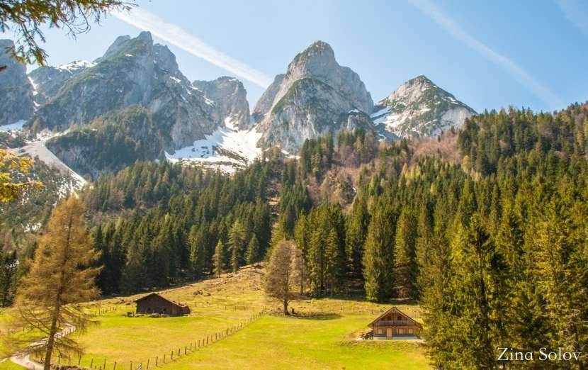
מאגם גוסאו, אנחנו נוסעים להלשטאט, העיירה המפורסמת שנחשבת לעיירה הכי יפה באוסטריה ומוכרזת כאתר שימור מורשת עולמית ע"י אונסק"ו. מדובר בנסיעה קצרצרה של כחצי שעה שעוברת לאורך הצוק ממנו נשקף אגם הלשטאט היפיפה, ואז פתאום נכנסים למנהרה ומגיחים בתוך העיירה עצמה!
מבדיקה זריזה באינטרנט מצאתי רק שני קמפינגים באיזור, אחד מהם בעיירה הסמוכה להלשטאט על שפת האגם, אנחנו מחליטים לנסוע לשם וחולפים על פני העיירה (לא לפני שאני מצלמת את הנוף). אין אפילו איפה לחנות עם הקראוון בעיירה כך שאין לנו ברירה אלא לנסוע הלאה. כשהגענו לקמפינג הופתענו לגלות שהוא נפתח רק ב1 למאי... ככה שנאלצנו לחזור על עקבותינו ולחפש קמפינג בהלשטאט. למזלנו יש קמפינג אחד ויחיד בקצה העיירה (אך עדיין במרחק 5 דקות הליכה מהטיילת), הקמפינג בעצם מהווה גם מקום לחניה יומית לקראוון (כי כמו שציינתי אין מקומות לחניית קראוונים בעיירה). אנחנו מוקסמים מהאגם והעיירה ומחליטים להישאר 2 לילות כדי למצות את המקום.
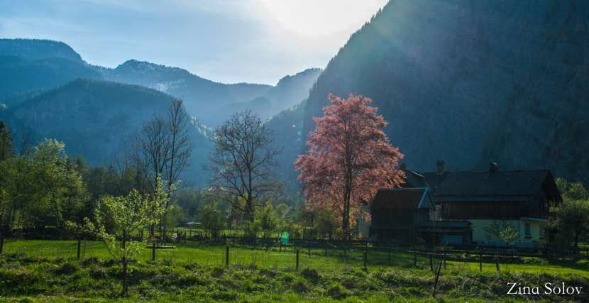
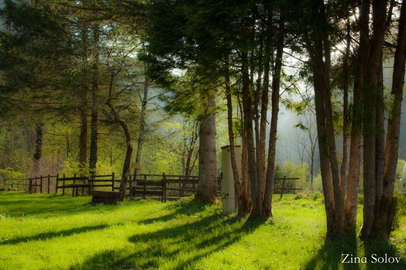
הקמפינג מצוחצח (כמו כל הקמפינגים עד עכשיו), נמצא בין ההרים בתוך אחו ירוק, השעה עדיין לא מאוחרת כך שאנחנו מחליטים לתור את העיירה (ולאכול משהו, כי שוב אין לנו כוח לבשל). למזלנו בשעה זו עדרי התיירים מתחילים לנוע חזרה לאוטובוסים ולא מורגש לחץ אנשים. אנו פוגשים כמה תיירים אסיאתיים שכלכך מתלהבים מהתאומים שפשוט נכנסים לנו לתוך העגלה...הצוציקים דווקא מבסוטים מתשומת הלב.
הלשטאט הוא כפר מדהים שבתיו נמצאים על צוק מעל האגם המקסים מה שנותן תחושה שאתם בתוך גלויה, גם הברבורים הרעבים ששטים באגם וצדים תיירים מוסיפים ליופי של המקום. הכפר נחשב לכפר העתיק ביותר באירופה שעדיין מתגוררים בו (כ-1000 איש אמנם), ורק בסוף המאה ה-19 (1875) נחפרה דרך לכפר, עד אז היה זה כפר ללא מכוניות שניתן היה להגיע אליו רק בשייט באגם או דרך ההרים (בהליכה), ורק בשנת 1966 נכרתה המנהרה המובילה כיום לכפר.
כמו יתר התיירים גם אנחנו צועדים על הטיילת ונהנים מהנוף ומהשמש המעריבה, מצאנו מסעדה ממש על שפת האגם אז החלטנו לנצל את ההזדמנות שהצוציקים רגועים וליהנות מארוחת ערב שכללה מרק בצל מעולה ונתח בשר משובח ביותר עם כוס בירה (איך אפשר בלי?). שבעים ומרוצים חזרנו לקמפינג להשכיב את הקטנים לישון וליהנות מהערב הנעים בחוץ בעצמנו.
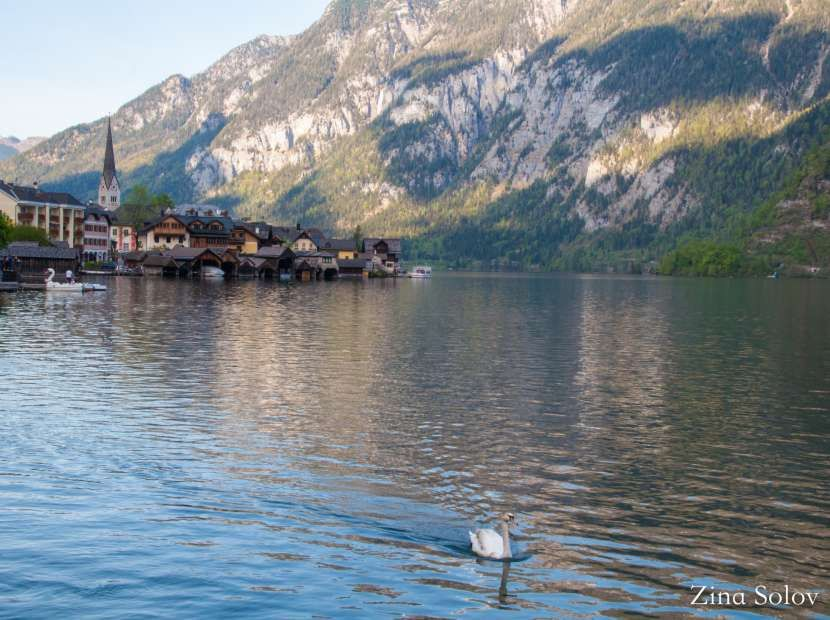
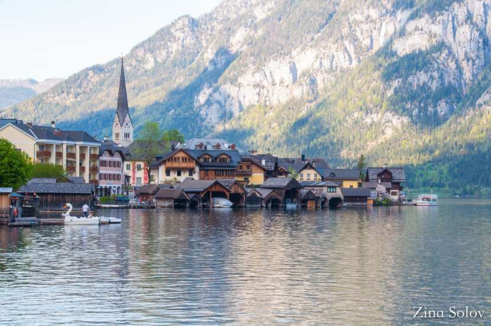
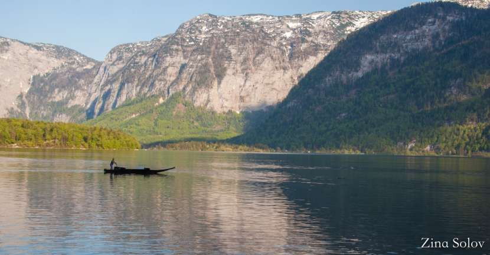
22.4:
אנחנו קמים ליום מקסים, כך שמיד לאחר ארוחת הבוקר אנחנו יוצאים ברגל לכיוון האגם. הקמפינג נמצא יחסית ביציאה מהעיירה, כך שאין הרבה אנשים בחלק הזה של האגם, הקהל מורכב ממקומיים בעיקר שבאו ליהנות משלוות הבוקר כמונו. הצוציקים נרדמים בעגלה ואנחנו פשוט נהנים מהנוף והשלווה שבמקום. לידנו ממש יש גן שעשועים מאוד מושקע לילדים כולל מגלשות לתוך האגם (החלק הרדוד שלו)- לכאן בטוח נחזור כשהצוציקים יגדלו מעט.
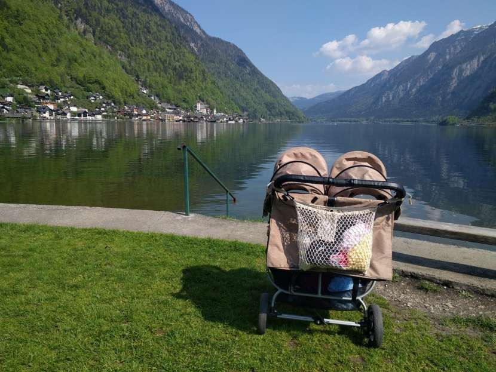
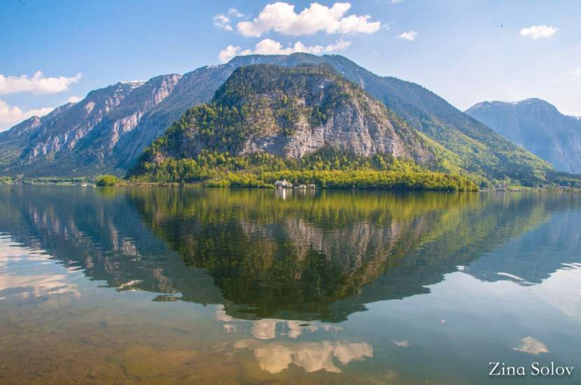
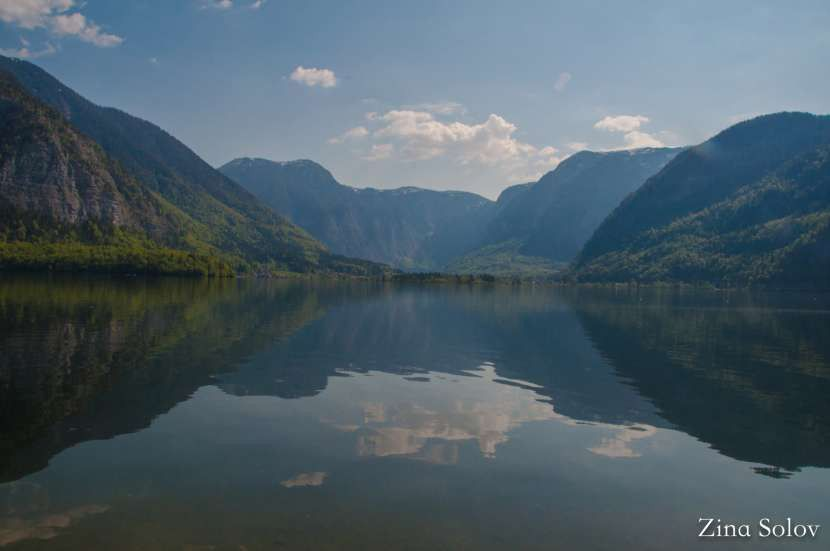
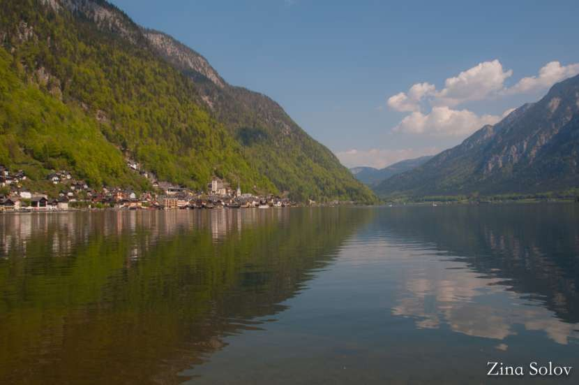
אחרי שעתיים הצוציקים עדיין חורפים להם אז החלטנו בינתיים לטייל שוב בעיירה, אכלנו לנו קרפ צרפתי וקפה (משקה חובה עם תינוקות :)) והמשכנו פנימה למרכז העיירה. העיירה פצפונת אבל מרהיבה, עם כיכר עיר מרכזית וצבעונית מוקפת הרים ירוקים וברקע מפל, המשכנו לתצפית על הכנסייה ושוטטנו קצת בין הסמטאות, עד שהצוציקים התעוררו והחלטנו לחזור לגן השעשועים. לאחר שהם אכלו, ניצלנו את ההזדמנות לקצת צילומים ולקצת שעשועים בפארק (אמא חזרה לימי הילדות) משם חזרנו לנוח קצת בקמפינג.
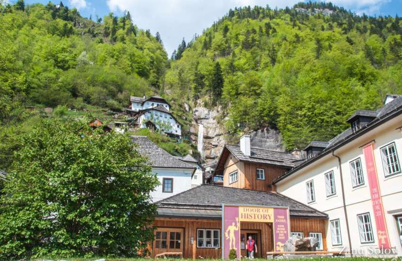
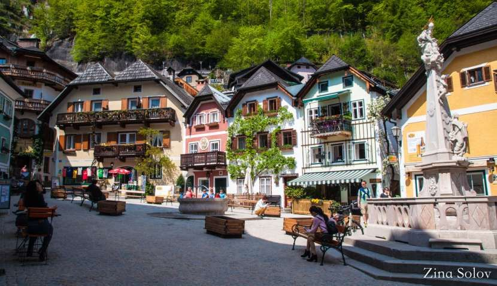
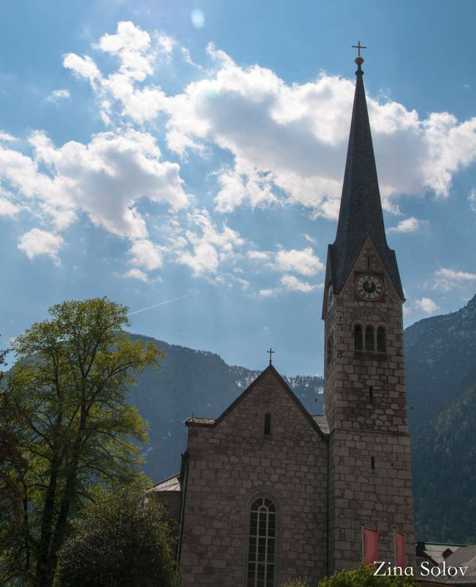
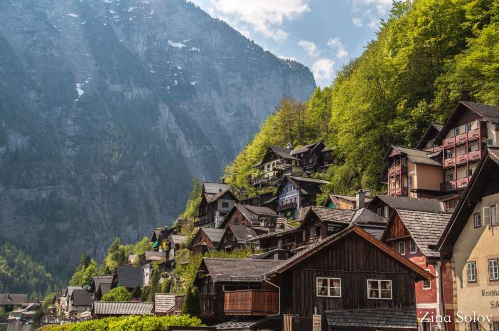
אחרי מקלחת (כי כלכך חם בחוץ ואנחנו באנו מוכנים לסיביר) ומנוחה קצרה אנחנו מחליטים ללכת לתצפית על העיירה (יחד עם מכרות המלח), הרכבל ( או רכבת, כי אין שם כבלים אלא פסי רכבת) נמצא במרחק חמש דקות הליכה, שמים את הצוציקים במנשא וקדימה.
מכרות המלח הן מקור הפרנסה ההיסטורי של תושבי העיירה, לצערנו לא ניתן להיכנס לשם עם תינוקות כך שאנחנו מסתפקים רק בעליה לתצפית (כרטיס לתצפית עולה 16 יורו למבוגר), והנוף פשוט עוצר נשימה!!!- הנה קצת תמונות.
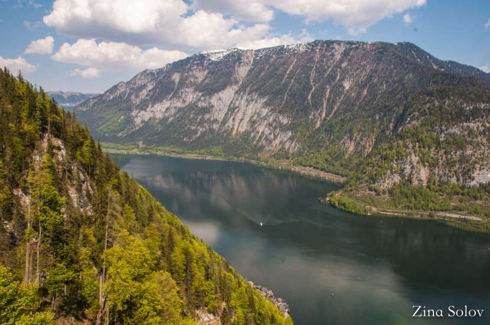
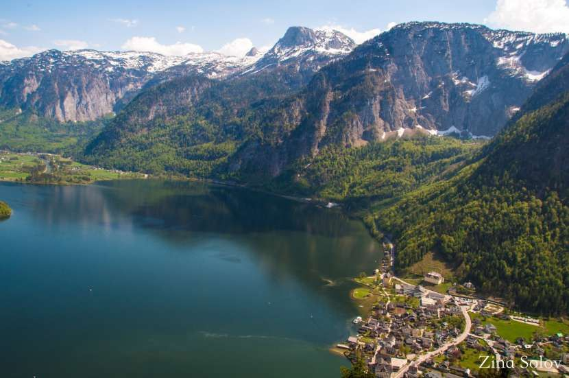
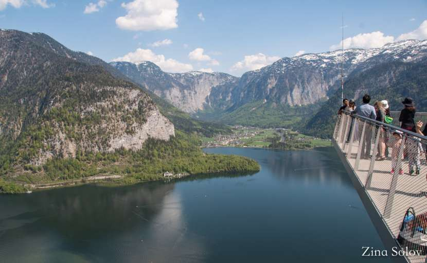
התצפית עצמה ממש תלויה מעל הצוק וחולשת על העיירה והאגם. במקום גם מסעדה נחמדה שם אנחנו אוכלים צהריים (הצוציקים נרדמו במנשא), משם חזרה לשגרת המקלחות, ההרדמות וכוס הקפה בחיק הטבע. כך סיימנו עוד יום, עייפים ומרוצים.
23.4:
עוד יום שמשי מקדם את פנינו, לאחר התארגנות בוקר (לקחנו את הזמן הבוקר), אנחנו יוצאים לכיוון אגם וולפגנג (הנקרא ע"ש וולפגנג אמדאוס מוצרט). אחרי נסיעה קצרה של כחצי שעה אנחנו מגיעים לעיירה סט.גיליגן ועוצרים להצטייד בסופר, משם אנחנו נוסעים לחפש קמפינג (שלצערנו או למזלנו, כולם נמצאים מחוץ לעיירה).
בסופו של דבר מצאנו קמפינג מדהים! (Birkenstrand) הנמצא על האגם כ-4 ק"מ מהעיירה, מיד אנחנו מבקשים מקום על שפת האגם- וזה הנוף:
החלטנו להתפנק היום בחיק הטבע כך שפשוט נשארנו בקמפינג- השתזפנו בשמש, ישנו שנ"צ (כבר שבועות שלא ישנתי שנ"צ!!!).
בערב יצאנו לסיבוב באיזור, חשבנו לעשות הליכה עד העיירה (יש שביל ממש מסודר). הנוף מרהיב, אחו ירוק, הרים מושלגים ברקע פשוט גלויה! לצערנו מזג האוויר מתקלקל וגשם מתחיל לטפטף והרוח מתחזקת. צפינו קצת בגולשי הרוח שניצלו את מזג האוויר לטובתם. אחרכך חשבנו לאכול במסעדה היחידה שראינו בדרך (שהיא גם גסטהאוס) אולם היא היתה ממש ריקה, אז החלטנו לוותר ולחזור לקראוון החמים שלנו.
24.4:
כל הלילה ירד גשם, אולם כשקמתי בשש בבוקר לשאוב חיכה לי נוף עוצר נשימה! האגם היה מכוסה עננים נמוכים מה שיצר תחושה של גלויה! מייד חטפתי את המצלמה ויצאתי לצלם, ואיזה אוויר! כזה צלול ונקי עם ניחוח של אדמה רטובה- פשוט תענוג!
הצוציקים בינתיים חרפו להם בנחת מול הנוף המהמם שנשקף מהחלון.
למרות הקרירות את ארוחת הבוקר אכלנו בחוץ, נהנינו ממזג אוויר מעט סתווי :)
וכך הכל נראה כשהשמיים התבהרו:
עד שהצוציקים מתעוררים היום כבר מתבהר והשמש יוצאת ממחבואה. אחרי ארוחת בוקר (כבר יותר לכיוון הצהריים :)) אנחנו נוסעים עם הקראוון לעיירה סט.גיליגן, התעצלנו ללכת ברגל וקצת חששנו מגשם.
החלטנו לעלות על הרכבל של העיירה לפסגת ההר Zwolferhorn, אותו רכבל שראינו אתמול אחרי שחזרנו מהסופר. אחרי תחקיר זריז בגוגל גיליתי שקיימת גם רכבת שעולה לפסגת ההר השני (מהעיירה סט.וולפגנג)- Schafberg Railway, אולם היא עדיין לא פועלת בתקפה זו של השנה (מתחילה פעילות רק ב-1 למאי).
ליד הרכבל יש מתחם חניה לאוטובוסים ורכבים גדולים בעלות של 9 יורו, אנחנו מחנים שם את הקראוון, שמים את הצוציקים במנשאים (כי למרות שאמרו לנו במידע לתייר שניתן לעלות עם עגלה, ממראה הקרונות זה נראה מאתגר לעגלת תאומים). עלות הכרטיס היא 25 יורו לאדם (עליה וירידה). אנחנו נכנסים לקרונית שנראת כמו הקרוניות של פעם, ומתחילים בעלייה איטית מאוד להר (כחצי שעה), בגלל הקצב האיטי יש תחושה כאילו אנחנו מרחפים באוויר בין האגם וההר, בכל פעם אנחנו בטוחים שהנה הפסגה רק כדי לראות עוד פסגה באופק, אבל הנוף שווה כל רגע של היותנו תלויים באוויר בתוך קרונית מתנדנדת.
כאשר אנחנו סוף סוף מגיעים מחכה לנו הפתעה לבנה! יש עדיין המון שלג על ההר, הטמפרטורה היא משהו כמו 9 מעלות שזה שינוי מרענן מהחום הכבד ששורר מטה. אנחנו מיד הולכים לתצפית לראות את הנוף המרהיב!
מזל שלא לקחנו את העגלה כי ממש לא ניתן היה להתנייד איתה, בגלל השלג לא ניתן ללכת בדרכי העפר כך שהאופציה היחידה שלנו היא מסלול במדרגות עד לפסגונת נוספת. האמת שיצאנו קצת פרנואידים ולכן החלטנו רק לטייל בתצפית ולרדת חזרה לעיירה, בעלי חשש לעלות יותר גבוה עם התינוקות ואני די זרמתי איתו, הרי צריך להשאיר משהו לפעם הבאה :), אז כבר נבחן מקרוב את המסלולים הרבים שיש לאתר להציע!
כשירדנו מההר הלכנו לסיבוב שוטטות בסט. גיליגן. בעונה זו של השנה העיירה ממש מנומנמת, אמנם בתי הקפה והמסעדות פתוחים אך האווירה די שוממת. עשינו סיבוב קצר על שפת האגם, נכנסנו מעט לשיטוט בסמטאות (אין שום דבר מיוחד). החלטנו לנצל את ההזדמנות ולאכול צהריים (ערב יותר נכון) במסעדה על גדות הנהר- כי למי יש כוח לבשל, גם הצוציקים אכלו איתנו (ביקשנו מים רותחים וערבבנו תמ"ל).
האגם מסט. גיליגן-
אחרי גיחה נוספת לסופר לקנות נשנושים חזרנו לקמפינג עייפים אך מרוצים, ואני ניצלתי את הערב לצלם את האגם, בדיוק הגיעו כמה ברווזים לבקר.
25.4:
זהו, תם הכיף, היום מתחילים בנסיעה חזרה לגרמניה. מהניסיון של היום הראשון בטיול, החלטנו לפצל את הנסיעה למינכן ליומיים (כדי לא להקשות על הקטנים ביותר מידי שעות ברכב), כך שהיום ניסע 100 ק"מ ומחר עוד 120.
לפני שעזבנו את הקמפינג זכינו לביקור על אורח מיוחד-
יצאנו לדרך מיד כשהצוציקים נרדמו לשנת הבוקר שלהם, היעד שלנו היום זה אגם cheimsee שתכננתי לישון שם ביומנו הראשון (מה שלא התאפשר בגלל המרחק). עזבנו את האלפים ויצאנו לכביש המהיר, גם לזלצבורג החלטנו שלא להיכנס (אנחנו לא מתלהבים מערים כך שלא הרגשנו שפספסנו משהו). אחרי מספר עצירות להרגיע ולהאכיל את הקטנים הגענו לקראת השעה 14:00 לאגם. סביב האגם יש המון אתרי קמפינג אך מדובר באגם ענקי, אנחנו התמקדנו בקצה שלו שקרוב לכביש כדי לחסוך בנסיעה מחר בבוקר. הקמפינג ממש על שפת האגם, אבל מכל הקמפינגים שהיינו הוא הכי לא מרהיב.
האגם מזכיר מאוד את הכנרת, מסביב יש שפע ברחשים ויתושים, אין דשא, אבל זה מה שיש ועם זה ננצח! למזלנו יש גם בקמפינג וגם ליד מסעדה כך ששוב אנחנו יכולים לוותר על בישולים. החלטנו לנסות את המסעדה ליד. איך יודעים שהגעתם למקום המיועד בעיקר למקומיים? אין תפריט באנגלית! המלצר החמוד תרגם לנו חלק מהמנות וכך גילינו שבעצם האגם מאוד פופולארי אצל חובבי הדייג כי הוא עשיר בדגה. אז החלטנו לטעום את הדגים מהאגם- לא רע.
אחרי הארוחה עשינו קצת סיבוב ליד מעגן האוניות וקדימה לחלק הקשה של היום- אריזת המזוודות.
26.4:
היום האחרון לטיול שלנו. במקור היינו צריכים להחזיר את הקראוון עד עשר בבוקר, אולם בגלל שהטיסה שלנו רק בעשר בערב לא רצינו להיתקע בשדה או לנסוע לעיר עמוסי ציוד (2 מזוודות גדלות, תיק החתלה ענקי ועגלת תאומים), לכן ביקשנו להחזיר את הקראוון בחמש (בתמורה לתשלום על עוד לילה, ככה זה עם גרמנים יקים).
היום מאוד סגרירי וגשום כך שאין לנו תחושה של פספוס. יצאנו לדרך ברגע שהצוציקים נרדמו ושמנו פעמנו לעיירה sulzmoos היכן מחזירים את הקראוון.
הנסיעה עברה חלק, כך שהגענו לקרבת העיירה כבר לקראת 12 בצהריים. החלטנו לנצל קצת את היום ולחפש מסעדה בסביבה כדי לאכול ולהאכיל את הקטנים, וכאן הוייז אכזב! הוא כיוון אותנו למסעדה שלא קיימת, כך יצא שעד שמצאנו מסעדה נסענו איזה שעה בסיבובים סביב אותם המקומות- לפחות הנוף יפה!
בסוף מצאנו מסעדה ממש נחמדה (ומקומית כי אין תפריט באנגלית), שם אכלנו את הארוחה הכי טובה שלנו בטיול וכל התענוג שכלל בשר, מרק, בירה וקינוח עלה לנו 30 יורו! ככה זה כשמתרחקים ממוקדי התיירות.
שבעים, אנחנו מנקים את הקראוון, בשעה 15:00 אנחנו מזדכים עליו, וב15:30 אוסף אותנו נהג המונית (שהזמנו מראש) חזרה לשדה.
יש לנו מלא זמן בשדה אולם עם תינוקות הזמן טס, עד ששאבתי והאכלנו אותם, היה לנו קצת זמן לנשנש וקדימה צ'ק אין לטיסה וחזרה הביתה :).
היה לנו טיול מדהים ונשארנו עם הרבה טעם של עוד, לא רק מאוסטריה אלא מלטייל עם הצוציקים.
למטה ריכזתי מספר טיפים על קניות, מקומות לינה וטיול עם תינוקות:
קניות- בגרמניה עשינו קניות בסופר edeka שהמליצו לנו בחברת ההשכרה שהוא הכי זול. באוסטריה עשינו בעיקר ברשת BILLA שם יש מבחר גדול וכן יש להם עוגות מוכנות ממש אבל ממש טעימות! שימו לב שבמקומות האלה רוב הסופרים הם מקומיים כך שאין יותר מידי מבחר מבחינת חיתולים (רק פמפרס) או מזון תינוקות (היחיד שמוכר זה נוטרילון שנקרא אפטמיל).
קצת על מקומות הלינה:
כל הקמפינגים מסודרים וכוללים חיבור לחשמל, שירותים ומקלחות (לצערי חלק מהמקלחות בתשלום- 5 דקות מים חמים) ו-WIFI (באיכות קליטה משתנה). מחיר לינה נע סביב 30 יורו (שכולל חשמל).
- ליד מינכן: Campingplatz München Thalkirchen- קמפינג ממוקם ליד יער עם נוף לנהר, לא יצא לנו לחוות אותו יותר מידי אבל נראה כפתרון לא רע בכלל לשהות בטבע אבל קרוב לעיר
- אגם המלכים: Campsite Grafenlehen- קמפינג מדהים מוקף הרים מושלגים ולידו נהר, נמצא 10 דקות הליכה מאגם המלכים, מקלחות כלולות אבל אין שליטה בעוצמת המים החמים כך שמתקלחים במים חמימים בלבד. בשיא העונה יש להזמין מקום מראש, במקום יש פאב שהיה סגור כעת, מניחה שנפתח בעונה. זה הקמפינג היחיד באיזור וממנו נוח לצאת להמון מסלולי הליכה בחיק הטבע.
- בדרך לגוסאו- Vitalcamping Oberwotzlhof- קמפינג בבעלות משפחתית במקום משגע בהרים. שירותים ומקלחות נקיים בטירוף, מקבלים מטבעות למקלחת (5 דקות מים חמים). במקום יש גם בריכה שאני מניחה שפעילה בקיץ.
- הלשטאט- Campinplatz Klausner-Höll- המקום היחיד להחנות קראוון בהלשטאט. לא חייב להשאר ללינת לילה, מצד שני המקום מהמם, ממש הליכה קצרה למרכז העיר ויחד עם זאת מרוחק מהמוני התיירים ונמצא בטבע מוקף בהרים. השתמשנו גם בשירותי כביסה (תמורת 9 יורו), מקלחות ושירותים במצב מעולה.
- אגם וולפגנג- Birkenstrand- הקמפינג הכי מושקע שהיינו בו, בבעלות משפחתית ממש על האגם, קיבלנו פינה ממש על קו המים כמעט. החיסרון במיקום שלנו זה שמתחם השירותים והמקלחות נמצא בצד השני. הקמפינג גם מרוחק מהעיירות (4 ק"מ מסט. גיליגן)- מצד שני אפשר ללכת ברגל לשם, יש שביל מיוחד (אנחנו פשוט קצת התעצלנו), אבל למי שמחפש אתנחתא בחיק הטבע זה מקום מושלם!
- אגם Panorama camping-:cheimsee הקמפינג הכי יקר והכי פחות אהבנו אותו, אמנם יש בו את כל השירותים כולל מסעדה שפתוחה! והכל נקי, חנינו גם על גדת האגם, אבל היה מלא ברחשים ויתושים, אין כלכך דשא, רק אחרכך גילינו שהאגם מושך אליו מלא דייגים שאוהבים ללון בקמפינגים שעל גדות האגם מה שמסביר את המחיר. לנו היה נוח ללון שם כדי לפצל את הנסיעה למינכן.
טיפים לטסים עם קטנטנים:
- טיסות: טסנו עם אל על למינכן, בהלוך היה שירות נפלא וארגנו לנו שלשה ריקה ככה שתינוק אחד היה עלי והשני באמצע (לא היה בסינט במטוס), גם הצוות היה מדהים וסייע הרבה. נתנו להם בקבוק בהמראה, הבת ישנה כל הטיסה והתעוררה לבקבוק בנחיתה. הבן פלירטט עם כל הנוסעים והדיילות עד שנרדם. לא סבלו מלחץ באוזניים והיו ממש רגועים. בטיסת חזור לצערי השירות היה גרוע, הושיבו אותנו אחד מאחורי השני למרות שהיו הרבה שלשות ריקות, בסוף פשוט אנשים התחלפו איתנו והטיסה עברה גם בשלום. בגלל הגבלה במסכות חמצן הדרך היחידה לשבת ביחד עם שני תינוקות זה רק אם יש שלשה ריקה אחרת מפרידים.
- אוכל: הם אוכלים תמ"ל וחלב שאוב, לגבי שאיבות בנתבג יש חדר אם וילד אפשר לשאוב שם בנחת ולחתל, ככה היו להם מנות חלב לטיסה ולקחנו גם בקבוקים ומחלק מנות עם תמל במידה ונצטרך, בסוף החלב הספיק. גם בשדה במינכן יש חדרים לחיתול התינוקות (ולא בשירותים) וגם שם אפשר לשאוב בנחת. בטיול עצמו אכלו חלב ותמל, לקחנו תמל מהבית ובסוף לא הספיק אז קנינו נוטרילון (זה המותג היחיד המוכר שהיה שם). לקחנו איתנו 8 בקבוקים ומברשת ניקוי, סטריליזציה עשינו ע"י הרתחה בסיר על הגז פעמיים ביום.
- טיטולים ומקלחות- לא לקחנו הרבה טיטולים מהבית, רק שיספיק ליומיים שלושה וקנינו שם. מקלחות עשינו בקראוון, פשוט קילחנו עלינו.
- לינה- קנינו להם אמבטיות (תיקי שינה כאלה) והם ישנו בהם לידנו במיטה, הם הרגישו עטופים ומוגנים ואנחנו לא חששנו שנמחץ אותם (אנחנו מוכרים אותם אם מישהו מעוניין)
- בגדים- הפחידו אותנו שאוסטריה קרה, לכן נערכתי לסיביר. בפועל היה חם ממש. לקחתי לכל אחד חמש סטים של בגדים וכמה אוברולים חמים. באמצע הטיול פשוט עשינו כביסה.
- כסאות בטיחות- שכרנו עם הקראוון, קיבלנו סל קלים של מקסי קוזי, שימשו אותנו היטב. הזמנו מראש מונית עם כסאות בטיחות כדי להגיע למשרד השכרת הקראוון וחזרה לשדה, הגיעו גם עם שני סל קלים (לתינוקות חשוב לרשום baby seat group 0 אחרת יכולים להביא כסא בטיחות לילד מעל גיל שנה).
- ציוד נוסף- לקחנו את עגלת התאומים שלנו, וכן משטח שיוכלו לשחק וכמה צעצועים. ומנשאים!!!
לסיכום, לטייל עם תינוקות (ועוד תאומים) זה מאתגר לוגיסטית אך בהחלט אפשרי וכיף! הילדים נהנו, ישנו בחוץ, שכבו על הבטן וחייכו כל הזמן. מזג האוויר היה פשוט נפלא. חשוב לזכור שהטיול הוא מ-א-ו-ד איטי! (אני מודה שבשבילי, שהייתי רגילה להספיק כלכך הרבה אתרים, זה היה שוק בהתחלה, אבל חשוב להסתגל ולהיות גמישים ולא להתאכזב אם פספסנו אתר).
למרות התכנון, לא נסענו יותר מ80 ק"מ ביום, כי נסיעות ארוכות יותר פשוט גזלו לנו יום שלם וחבל היה לבלות יום יפה ברכב. כמו כן אחרי שש בערב לא יצאנו כי השכבנו לישון, מצד אחד קצת מאכזב כי יש עדיין אור בחוץ, מצד שני כשהתינוקות ישנו ניצלנו את הזמן ליהנות מכוס קפה/בירה/יין בחיק הטבע.
תודה שקראתם :)